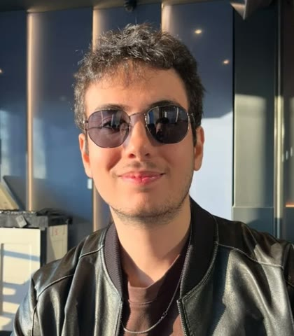
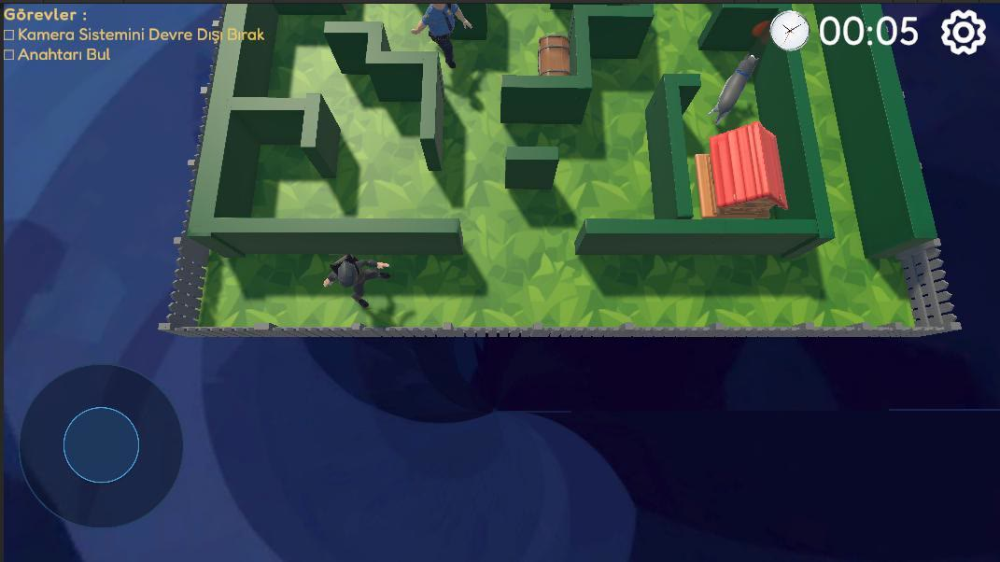

IT Infrastructure & Systems Support Intern
Total Technic · Atatürk Airport, İstanbul
Server migration with rack, Ethernet and fiber work; workstation setup and troubleshooting; firewall, monitoring and network diagnostics.
Unity / C# game developer · İstanbul
I build complete games in Unity: stealth AI with sight cones and patrols, arcade vehicle physics, bot opponents, online rooms, mobile optimization, and tests under every feature.
Final-year Computer Engineering student. On my solo games I work like a small studio lead with a team of AI coding agents: design doc first, contracts between roles, tests as the definition of done.

Featured · Mobile · isometric stealth puzzle · Unity 6 · Apr – Jun 2026
A thief slips through suburban hedge mazes and houses at night. Read the guards' patrols, stay out of their flashlights, sneak past guard dogs, crack loot chests and hack electrical boxes, then reach the exit unseen.

Enemies see with raycast vision cones and also sense a player who gets too close, whether or not they can see them.
Vector3.Angle to the player's chest heightGuards and dogs move on NavMeshAgent between patrol points, each with its own wait time, so players learn the windows to slip through. Level 2 adds overlapping routes and dogs that rely on the proximity sense.
Wire matching, memory cards and a timing task built on one shared minigame base class. Entering a chest's trigger opens a loot panel with synced sound; leaving resets it safely.
Loot value is added to a persistent bank balance and spent on costumes in a shop with a rotating showcase. Money, chosen costume and settings are saved with PlayerPrefs and applied on level load.
Singleton managers for audio, timer and game state that survive scene loads and pause. AudioMixer sliders in decibels via Mathf.Log10, vibration toggle, safe-area UI, tutorial, jitter-free LateUpdate camera, and win and caught screens that freeze time.
Built the levels, from the garden maze and house rooms to Levels 1–3, worked on the NPC guards, and handled the skybox, animation fixes and the inventory. My teammate Enes Çelik and I split the commits almost evenly (30 / 29) and wrote the game design document together.
PC · 3D arcade racing · Unity 6 URP · solo, in development
Gravity-powered summer-luge racing on low-poly mountain tracks. Draft behind rivals, drift to charge a boost, and race up to seven bots or friends in online rooms of eight.
Captured from the Windows build with an automated driver. Turn on sound for the race music.
Rigidbody arcade sled physics where speed comes from the slope. Drift charges a two-stage boost, slipstream kicks in 2–10 m behind a rival, a well-timed push at GO gives a start boost, and stuck or off-track sleds respawn at the last checkpoint.
Closed-loop spline tracks with banking, generated road mesh, curbs and rails. Checkpoints every ~50 m stop shortcutting backwards, and a cable lift pulls sleds back up at constant speed so race order holds.
Bot drivers that follow the track at three difficulty levels. Netcode for GameObjects with a dedicated race authority; direct-IP races verified across two instances, room codes through Unity Relay/Lobby in progress.
Seeded procedural terrain and GPU-instanced scatter for three biomes. Sleds, riders and track kits generated by Blender Python scripts, with scripted rider animations and IK grip points. 24 sounds and the music synthesized in Python.
Android · portrait · one-touch arcade runner · solo · build 0.9.0
Hold to spread two connected cores, release to pull them together. The tether gathers energy, the cores collect coins, and releasing at full energy fires a Pulse that opens the route ahead.
Before/after figures come from matched, scripted routes in the Unity Editor (Mono). On-device profiling is the next step.
Symmetric one-touch control, energy and Pulse rules, relay pads that open gates when the tether spans them, and amber locks only a full Pulse can move. Levels and the streamed endless course share one rule set; Endless pace ramps up to a cap.
Persistent level progress, best scores and audio settings, with a tested migration from the older five-level save format.
Cached HUD text formatting, a static menu preview that stops redrawing, conservative collision pre-filtering and batched VFX updates, each measured against the same route before and after.
Windows and signed Android ARM64 builds (API 25–36). Blender source kept apart from validated FBX exports; original audio rendered in Python.
How I build
My two solo games, Luge Rush and Tether Rush, were made with AI coding agents working in parallel roles: gameplay, level design, Blender art, VFX, QA. There I play lead: I set the design, split the work, and review and integrate every change before it lands.
A GDD, a numbered decision log (43 entries in Tether Rush) and a status file that outlives any chat session.
An architecture doc fixes namespaces, core interfaces and animator parameters so gameplay, art and level work never collide.
Each agent gets one owned folder, its dependencies, acceptance criteria and an out-of-scope list. No two agents touch the same file.
Zero compile errors, green EditMode/PlayMode suites, rendered Blender previews and builds. Unrun checks are reported as unrun.
Models, animations, sounds and trailer captures come from scripts, so they can be regenerated and reviewed like any other change.
Tools: Claude Code and OpenAI Codex as agent teams, Unity batch mode and Test Framework, Blender Python, ffmpeg, Git with LFS, PowerShell build scripts.
Background
Experience
Total Technic · Atatürk Airport, İstanbul
Server migration with rack, Ethernet and fiber work; workstation setup and troubleshooting; firewall, monitoring and network diagnostics.
Digital Trade · Avcılar, İstanbul
Designed a PostgreSQL database from ~50 research sources, built Python pipelines that turn historical documents into JSON records, and shipped a React prototype with auth, roles and search.
Software Persona · TNC Group
Web, database and mobile application development in a remote team program.
TEAM 1618 · Teknofest autonomous vehicle
Owned the AI side of the team's autonomous vehicle and built its driving simulation in Unity.
İUC Career Club
Run the club's social media and visual design.
İstanbul University-Cerrahpaşa · GPA 3.3 / 4.0
Skills
Unity 6 (URP), C#, ScriptableObjects, Input System, Cinemachine, Splines, Netcode for GameObjects, Relay/Lobby, Android builds
Stealth AI (NavMesh patrols, raycast vision cones, proximity detection), minigames, in-game economy and shop, arcade vehicle physics, bot AI and difficulty, race and checkpoint logic, procedural terrain and level generation, GPU instancing, save and progression systems, HUD and menus
Unity Profiler, GC allocation reduction, EditMode / PlayMode tests, automated play-throughs, build verification
Blender modeling and scripted animation, Blender Python, FBX export validation, procedural audio in Python
Claude Code, OpenAI Codex, multi-agent orchestration, prompt engineering, spec-driven workflows, AI for autonomous driving (Teknofest)
Python, Java, Dart, SQL, Git / Git LFS, React, Flutter, PostgreSQL
Turkish (native), English (upper-intermediate)
Looking for game developer internships and junior Unity roles. The source for all three games is public on GitHub.